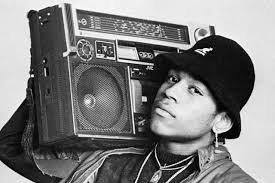

Hiphop is een invloedrijk muziekgenre dat ontstond in de jaren 70 in de Bronx, NYC. Het combineert muziek, dans, kunst en fashion. Hiphopmuziek kenmerkt zich door ritmische beats, samples en poëtische rapteksten. Het dient vaak als medium voor sociale en politieke boodschappen en belicht de ervaringen van de zwarte gemeenschap. Beroemde artiesten zoals Tupac, Notorious B.I.G., Jay-Z en Eminem zijn opgekomen dankzij hiphop. Subgenres zoals gangsta rap, trap en conscious rap hebben elk unieke kenmerken. Hiphop verbindt en inspireert en blijft een kracht in de muziekwereld.